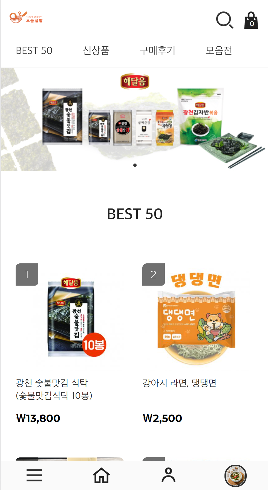

프로젝트 내용
두개의 서로 다른 서비스의 회원 데이터를 연동하고 해당 회원의 스푼(마일리지)와 쿠폰을 연동하는 프로젝트
A 서비스: 모바일 앱. Node Express API 서버, NoSQL 데이터구조
B 서비스: 모바일 & PC 웹 쇼핑몰. APM 프로젝트
A와 B 서비스 각각의 데이터 스키마가 존재하고 서로 다른 로직으로 스푼(마일리지)와 쿠폰을 처리. A 또는 B에서 회원가입을 하면 A와 B에 모두 로그인가능하며, 스푼과 쿠폰을 사용하는 경우 A와 B에 정보가 업데이트되면서 동기화됨.
기술스택
PHP, Apache, MySQL, Nodejs, Express, MongoDB Atlas, AWS EC2, AWS Route53, AWS Load Balancer, css, Javascript
맡은 역할
- 시스템 연동 로직 설계
- 백엔드 API 개발
- 서버 구축
- DB 구축
시스템 연동 로직 설계
NoSQL(MongoDB) 기반의 express 서버와 SQL(MySQL) 기반의 Apache 서버 간의 데이터 연동
두개의 독립적인 서비스의 독립적인 체계를 갖춘 마일리지와 쿠폰 및 회원 시스템 및 다른 구조의 DB를 쌍방향 연동
<사용 기술>
- DB: Mongodb, MySQL
- Language: Node.js, PHP
백엔드 API 개발 및 서버 구축
Express 서버의 API를 추가하여 쇼핑몰에서 요청하는 연동 처리를 수행하도록 개발. AWS EC2에 APM 서버 구축
<사용 기술>
- 쇼핑몰: PHP
- API Server: Node Express
- AWS: EC2, ELB, Route53